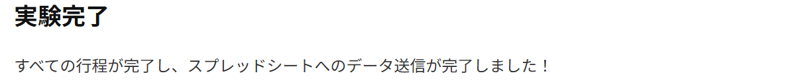
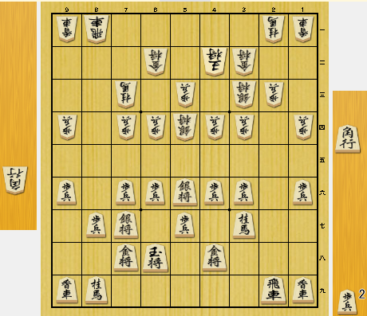
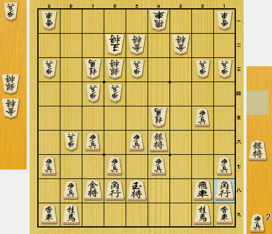

第1部 (1/4)
実験後の流れとご留意事項
📌 実験終了後の重要なお願い
- 全30問の回答が終了すると、自動的にデータ送信画面が表示されます。必ず送信ボタンを押して、回答結果をスプレッドシートへ送信してください。
- データ送信が完了したことを確認の上、表示される回答一覧画面のスクリーンショットを撮影して保存してください。
- ※ここに掲載されている画像や回答一覧などの表示はすべて見本となります。
【データ送信画面のイメージ見本】

【回答一覧画面のイメージ見本】

【実験へのご協力のお願い】
本実験にご協力いただきありがとうございます。
本実験は、将棋の局面についてアマチュア高段者と将棋AIの形勢判断の評価の傾向の違いを調査することを目的としています。
■ 実験の内容
提示される将棋の局面図をご覧いただき、それぞれの局面における形勢について、最も適切と思われるものを選択してください。また、実験前に数個のアンケートをお願いします。
■ 問題数: 30問（全4部構成 / 今回は 第1部 1/4）
本実験は全120問（30問×4部構成）となっており、今回はそのうちの「第1部」となります。（※本番前に例題があります）
■ 注意事項
それでは、以上の内容をご確認の上、それぞれの形勢を7段階の中から最も適切と思われるものをご選択ください。
📌 実験終了後の重要なお願い
【データ送信画面のイメージ見本】

【回答一覧画面のイメージ見本】
※被験者別のデータを識別するため、お名前をローマ字にした際の「姓の頭2文字 ＋ 名の頭2文字」を小文字でご入力ください。
Q. 自分と同じレベルの相手と対戦した時「中盤の駒組の段階でほぼ同型」と仮定した場合、あなたにとって各判定（有利・優勢・勝勢）に相当する最低限の駒得はどれですか？
【参考例：歩が1枚得している状態のイメージ】


【説明文】
画面のように将棋の局面が提示されます。盤面の右上「▲ 先手」、左下「△ 後手」を確認し、7段階から形勢を選択してください。
例題は2問あります。
現在の形勢は？
現在の形勢は？
すべての問題の回答が終了しました。以下のボタンを押して、回答結果をスプレッドシートへの送信およびCSVダウンロードを行ってください。
【データ送信画面の見本】
⚠️ ご注意・ご案内
| 問題 | あなたの回答 |
|---|
| 問題 | あなたの回答 |
|---|
| 問題 | あなたの回答 |
|---|